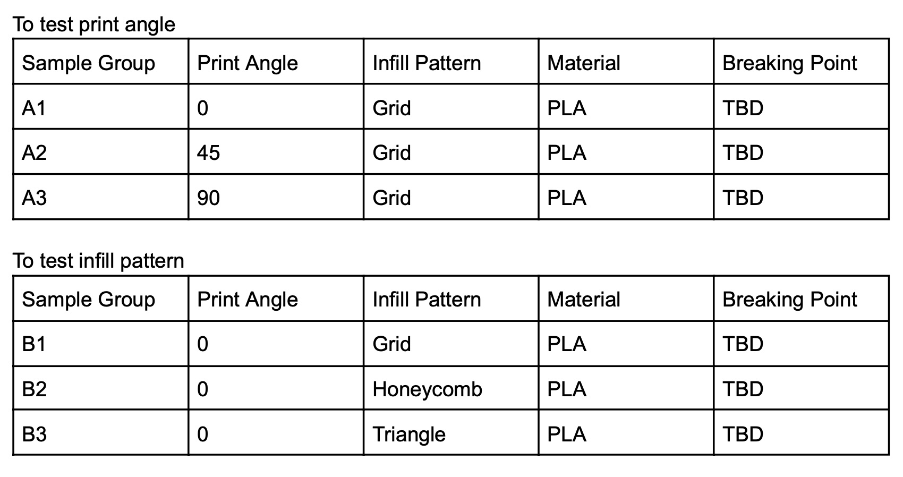

Writing Sample: Proposal
(This is a writing sample for my ENC 3241 class)
This project involved writing a formal research proposal adapted from the UCF Office of Undergraduate Research"s "Student Research Grant" guidelines. My proposal, titled "Printing for Power," outlines a technical study on optimizing FDM 3D printing parameters to maximize structural integrity in engineering components. The strength of this assignment is its rigorous focus on data-driven methodology and its direct application to improving campus resources for the UCF engineering community.
Printing for Power: Optimization of Layer Orientation, Infill Density, and Thermal Parameters for Structural Integrity in FDM Components
The objective of this research is to make a standardized set of 3D printing guidelines or rules that maximizes the strength of Fused Deposition Modeling (FDM) parts. This study is driven by the research question, how do changes in print orientation, layer thickness, and nozzle temperature affect the bond strength between layers in PLA plastic parts? By running stress tests on 3D printed plastic samples, I will identify which internal geometric patterns or shapes, known as infill, distribute weight most effectively without wasting material. The final goal is to give a reliable guide to engineering students so their 3D designs can handle real world pressure without snapping or bending.
3D printing or Fused Deposition Modeling (FDM), is used for a lot of things like prototyping and making final engineering parts, but it has a problem with reliability. Even though we can print complex shapes easily, most of the time these parts are weaker than traditional plastic parts. Research shows that 3D printed objects are weakest at the "bond points," which are the layers where the plastic sticks together (Dizon et al., 2018). Therefore, students 3D printing have to carefully choose the print orientation to ensure that engineered parts do not break during use (Dizon et al., 2018). Currently, there is not a standardized guide to help students decide which settings to use to make their parts strong enough for real world stress.
The value of this research is in its focus on the three main variables that cause 3D prints to fail. These are the angles, the internal shapes, and the heat. First, the direction a part faces on the print bed has a bigger impact on its strength than how thick the layers are (Chacón et al., 2017). When printing a part at the wrong angle, it could break instead of bend (Chacón et al., 2017). Second, the internal pattern, like a grid or a honeycomb shape, changes how a part handles pressure (Abeykoon et al., 2020). Choosing the right geometric pattern can help the part hold more weight while using less plastic, saving material costs (Abeykoon et al., 2020). Also, adding more infill makes a part stronger, but it also increases the weight and printing time (Abdullah Aloyaydi et al., 2019). Finally, heat is a very important factor. As the temperature increases towards the material's "glass transition point," the plastic becomes more flexible, but it also loses its ability to carry heavy weights (Grasso et al., 2018).
By investigating these settings, I am proposing to create a set of guidelines that balance strength, weight, and printing time. This is important for the UCF community because there are many engineering students that use 3D printers on campus for senior design projects and club competitions. By having a reliable guideline for settings like print orientation and infill density, students will have an easier time designing parts that are safe and durable. Students will get data backed rules to make sure their projects do not fail when they are placed under real world pressure (Tanikella et al., 2017).
This project will follow an experimental laboratory approach to measure how different 3D printing settings change the physical limits of a printed part. The research will be conducted in a controlled lab setting using computerized testing equipment to gather data through mechanical stress testing.
Phase 1: Sample design / Preparation:
The first step is using CAD software to design standard test parts. I will create different groups of samples to test the variables print orientation, infill density, and internal geometric patterns. I will compare parts printed at different angles on the print bed and test different infill patterns, which are the internal geometric shapes like grids or honeycombs that fill the inside of the part, to see which ones hold weight the best. I will use standard PLA plastic for all samples.
Phase 2: Mechanical Stress Testing:
After printing, I will use lab equipment to perform tests by pulling the plastic until it snaps, or bending it until it breaks. I will follow the experimental method of weighing each sample to see how its mass affects its durability. To account for environmental factors, I will also test samples at different temperatures to see how the material loses its strength as it gets warmer. This is the most accurate way to measure how well the layers of the plastic bonded together (Dizon et al., 2018).
Phase 3: Data Analysis and Guideline Development:
Finally after testing, I will analyze the data to see which settings created the strongest parts. I will also compare the breaking points of different internal shapes and print angles to find the best balance between strength and weight. More specifically, I will look at how the print direction affects whether a part snaps or bends under pressure. Finally, I will use these results to create a simple 3D printing guideline for other students at UCF.
Timeline (Summer C 2026):
Starting in May and ending in August
- May: Finish the background research and design the CAD test samples
- June: 3D print all the samples and begin the first stress testing in the lab
- July: Finish all the testing and analyse the data to find the strongest settings
- August: Create the guideline, finalize the research report, and prepare a poster for the UCF showcase.
The main outcome of this research is the creation of a standardized set of 3D printing guidelines designed specifically for engineering students. The most important deliverable is a cheat sheet or technical white paper that clearly outlines the best print angles, heat settings, and internal shapes to use for maximum part strength. This document will allow students to avoid the problem of parts breaking at the layer bonds by providing them with data backed settings. By following these rules, students can ensure their 3D printed designs are durable enough to be used in the real world without having to perform their own expensive or time consuming stress tests.
I will also produce several other deliverables to share this new knowledge with the UCF community. I plan to create a research poster that summarizes my experimental data, including photos of the samples and charts showing their breaking points. This poster will be presented at the UCF Summer Undergraduate Research Showcase and potentially at other engineering events on campus. To make sure these findings are accessible to all students, I will upload a digital version of the guidelines to local UCF engineering forums and Discord servers. I also plan to write a formal manuscript detailing the mechanical limits of common materials like PLA, which could be shared with campus 3D printing labs or submitted to an undergraduate research journal.
This project provides significant value to the UCF community because it makes the campus 3D printing resources more efficient. Currently, students waste material and time through trial and error when their prints snap or fail, but my research will provide the new knowledge they need to balance part strength with weight and cost, helping students choose the strongest internal patterns to save plastic while keeping their projects safe. Finally, this project will turn 3D printing at UCF from a hobbyist tool into a reliable resource for functional engineering parts.
Dizon, John Ryan C et al. “Mechanical Characterization of 3D-Printed Polymers.” Additive manufacturing 20 (2018): 44-67. Web
Abdullah Aloyaydi, Bandar, Subbarayan Sivasankaran, and Hany Rizk Ammar. “Influence of Infill Density on Microstructure and Flexural Behavior of 3D Printed PLA Thermoplastic Parts Processed by Fusion Deposition Modeling. ” AIMS materials science 6.6 (2019): 1033-1048. Web.
Grasso, Marzio et al. “Effect of Temperature on the Mechanical Properties of 3D-Printed PLA Tensile Specimens. ” Rapid prototyping journal 24.8 (2018): 1337-1346. Web.
Chacón, J.M et al. “Additive Manufacturing of PLA Structures Using Fused Deposition Modelling: Effect of Process Parameters on Mechanical Properties and Their Optimal Selection. ” Materials & design 124 (2017): 143-157. Web.
Abeykoon, Chamil, Pimpisut Sri-Amphorn, and Anura Fernando. “Optimization of Fused Deposition Modeling Parameters for Improved PLA and ABS 3D Printed Structures. ” International Journal of Lightweight Materials and Manufacture 3.3 (2020): 284-297. Web.
Tanikella, Nagendra G, Ben Wittbrodt, and Joshua M Pearce. “Tensile Strength of Commercial Polymer Materials for Fused Filament Fabrication 3D Printing. ” Additive manufacturing 15 (2017): 40-47. Web.
I am currently a Mechanical Engineering major at the University of Central Florida, where I have developed a strong foundation in the physics and mathematical modeling required for engineering projects. My academic standing has allowed me to become a member of the Tau Beta Pi Engineering Honor Society, which demonstrates my commitment to high standards in the engineering field.
While I am new to formal research on 3D printing, I have experience in technical leadership and systems. I recently served as an Undergraduate Learning Assistant (ULA) at UCF, where I help other students with their C programming course. This role requires me to break down complex technical concepts into clear instructions, which is a skill I will use to develop the 3D printing guideline for this project. Additionally, my background in software development and systems programming gives me the technical mindset needed to operate computerized testing equipment and analyze mechanical data. My previous professional experience as a lifeguard also demonstrates that I am responsible and capable of following strict safety protocols in a laboratory setting.
This research project involves the testing of 3D printed polymer materials and does not involve human subjects or animal testing. Therefore, this project does not require approval from the Institutional Review Board (IRB) or the Institutional Animal Care and Use Committee (IACUC).
PLA Filament (Bulk) - High-quality plastic used to print the primary groups of test samples in various colors for easy categorization. ($250.00)
ABS Filament - A more heat-resistant material used to compare how internal geometric patterns perform across different plastic types. ($125.00)
Lab Access Fees - Payment for the required time using computerized stress-testing machines to measure the physical breaking points of each sample. ($500.00)
Replacement Parts - Spare nozzles and build plates to ensure the 3D printers remain functional during high-volume research printing. ($120.00)
Poster Printing - The cost for professional, large format printing of the final research findings for the UCF Summer Showcase. ($60.00)
Digital Storage - Secure cloud hosting to back up large experimental data files, high resolution test videos, and CAD models. ($90.00)
Total Requested: $1,145.00
Some tables I plan to use:
